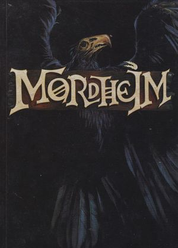

The name of the game is Mordheim. It was released in 1999 and officially discontiued in all formats in 2014. It is a tabletop miniatures skirmish wargame where you create battles with warbands of roughly five to ten 28mm miniatures per side. Below the picture is a link to the website that currently hosts rules and source material.
 Go check it out!